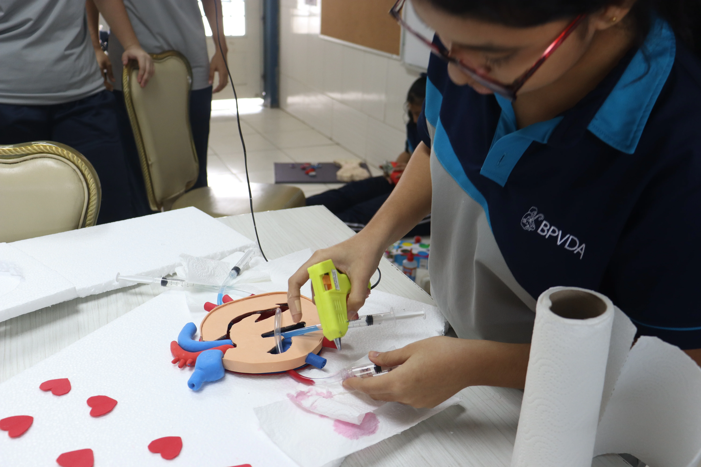
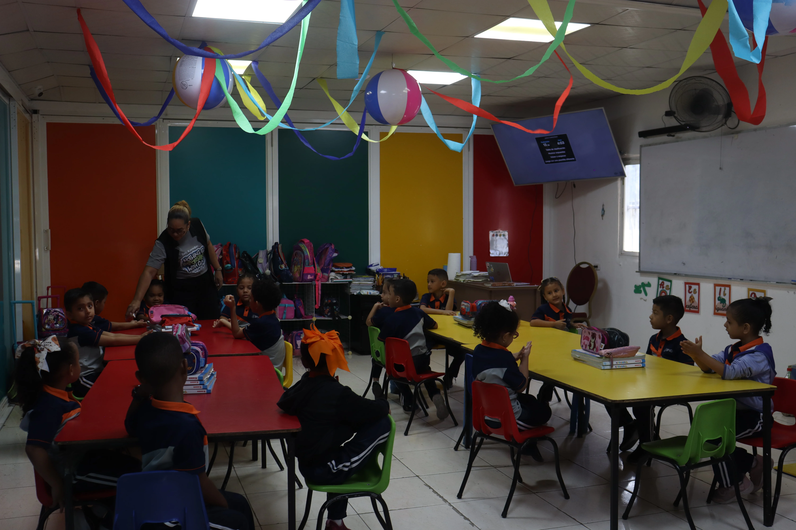

Pensamiento Crítico y Lógico
Estimulamos la capacidad de resolver problemas complejos, cuestionar con criterio y aplicar conocimientos a situaciones reales.

Guiamos a cada estudiante a desarrollar su potencial intelectual, moral y espiritual en un entorno de excelencia y acompañamiento continuo.
“Instruye al niño en su camino, y aun cuando fuere viejo no se apartará de él.”Proverbios 22:6
Un plan de estudios estructurado para consolidar competencias fundamentales para el presente y el futuro.
Estimulamos la capacidad de resolver problemas complejos, cuestionar con criterio y aplicar conocimientos a situaciones reales.
Formación integral guiada por principios de respeto, empatía, integridad y servicio desinteresado hacia la comunidad.
Herramientas de comunicación bilingüe y tecnologías educativas que potencian el aprendizaje colaborativo e interactivo.
En cada jornada académica, nuestros educadores crean un ambiente seguro, motivador y retador donde cada estudiante se siente valorado y respaldado en sus metas personales y colectivas.

Una mirada a los momentos cotidianos, el trabajo en equipo y el entusiasmo que define a nuestra comunidad.




Las admisiones para el período escolar 2026 están disponibles. Conoce los requisitos y asegura el cupo de tu hijo hoy mismo.